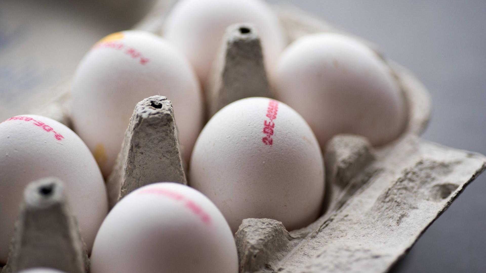

Що з яйцями?
Знесені яйця збирають, маркують, складають у лоточки та відправляють на прилавок. Здебільшого, без зайвих гігієнічних процедур. На те є свої причини - по-перше, це додатковий процес, який коштуватиме грошей, по-друге, миті яйця швидко псуються, так як шкаралупа має пористу структуру, по-третє - поки яйця доходять до споживача, більша частина кишкових бактерій на поверхні гине, а, по-четверте, нічого надто страшного в тому нема, якщо курка здорова, а споживач не нехтуватиме правилами гігієни.
Отож, які вони ті правила гігієни, коли мова йде про курячі яйця на нашій кухні?
Купуючи яйця у контейнері, ліпше відразу помістити їх в окремий пакет, а набираючи нефасовані яйця із прилавку, незле скористатися рукавичкою;
Потрібно слідкувати за датою виробництва та обирати найсвіжіші яйця. Також є публікації, які кажуть, що кури на вільному вигулі несуть яйця з меншою кількістю патогенних бактерій на поверхні шкаралупи. Ми обираємо яйця від курей вільного вигулу ще й з гуманних міркувань;
Зберігати яйця слід у холодильнику – краще в закритому контейнері. Добре, коли це одне і те ж саме місце;
Дістаючи яйця із холодильника для приготування, краще їх покласти в тарілку а не на поверхню столу - так вони не покотяться і не поб'ються, а мікробіота із їх поверхні не скакатиме по Вашій кухні;
Розбивши яйце, шкаралупу кладемо також у ту ж тарілку, а не на стіл. По закінченні маніпуляцій з яйцями викидаємо шкаралупу, миємо тарілку та руки;
Не варто пити сирі яйця - сальмонельоз, згідно статистики, це - 1,2 млн отруєнь щороку в США, та 100 тисяч - в Європі. Воно Вам треба?
